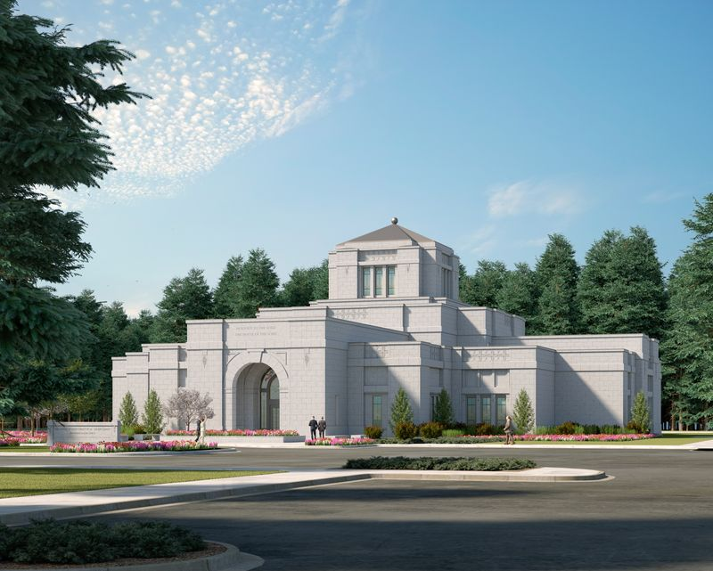
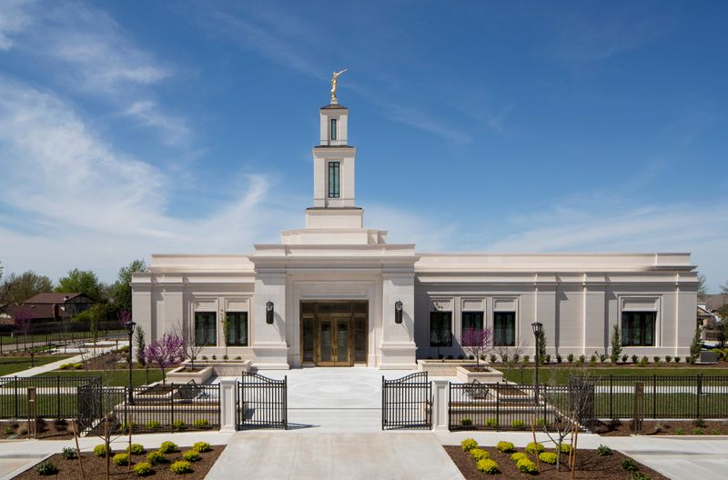
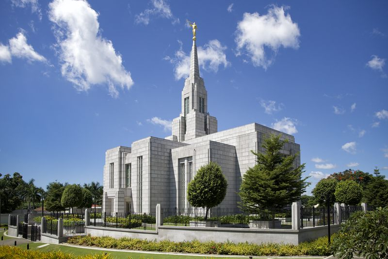
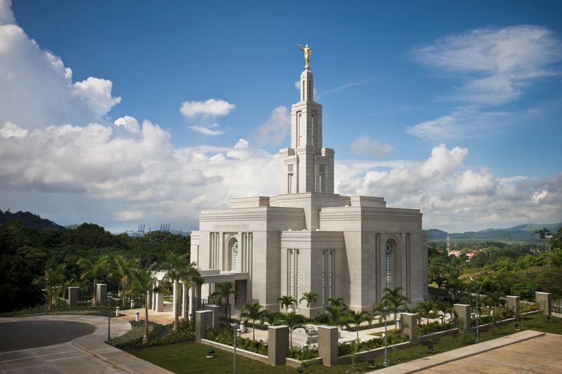

Página Inicial
 Templo de Aba, Nigéria
Templo de Aba, Nigéria
 Templo de Alabang, Filipinas
Templo de Alabang, Filipinas

Templo de Anchorage, Alasca
 Templo de Fukuoka, Japão
Templo de Fukuoka, Japão
 Templo de Miraflores, Guatemala
Templo de Miraflores, Guatemala

Templo de Oklahoma City, EUA

Templo de Cebu, Filipinas
 Templo de Salt Lake City, Utah
Templo de Salt Lake City, Utah

Templo da Cidade do Panamá, Panamá